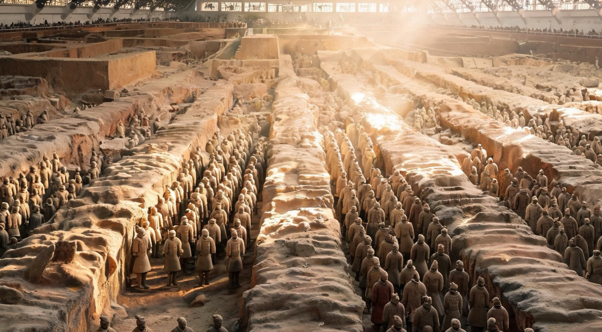
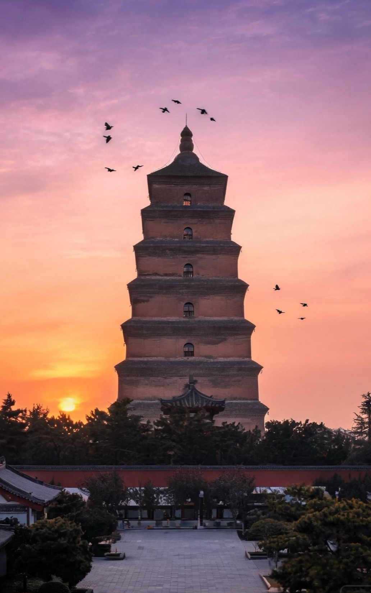
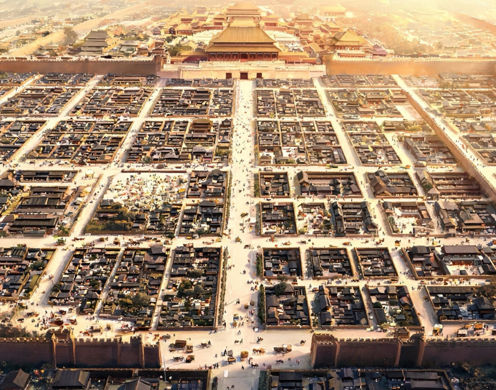
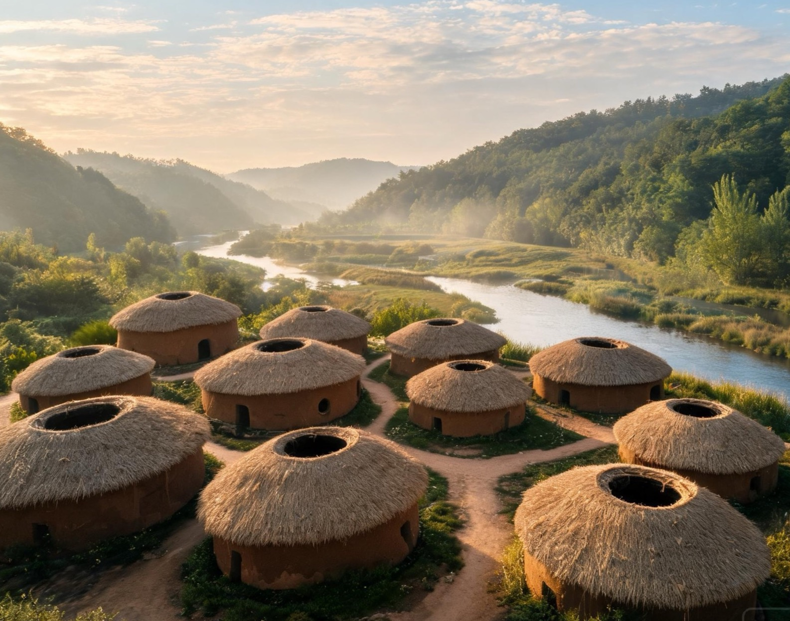
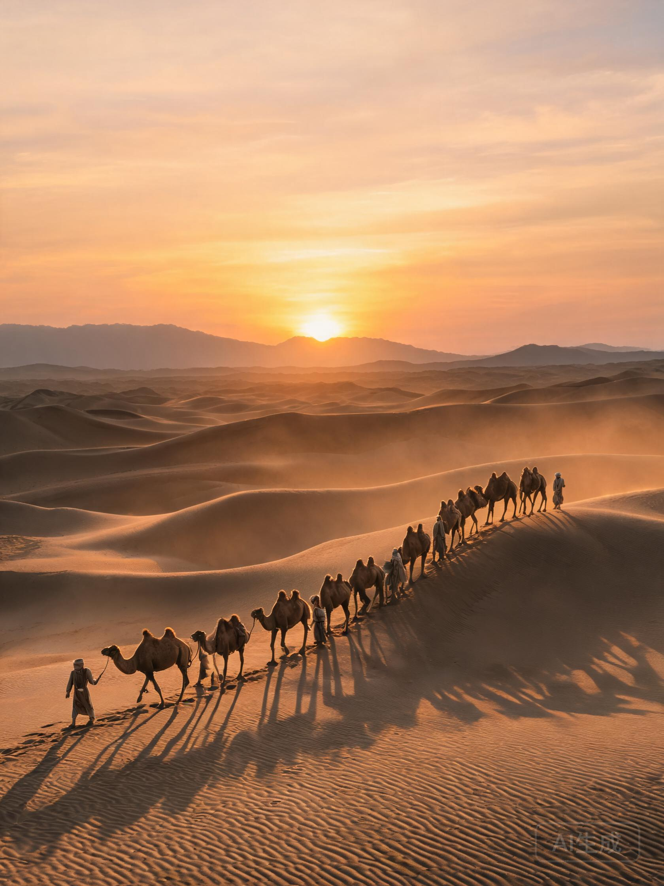

c. 4500 BCENeolithic
Banpo: a village by the river
A Yangshao-culture settlement of round thatched houses, storage pits and a ditch — excavated in 1953 and now one of the best windows into Neolithic life in China.
Prehistory长安
For more than a thousand years this was Chang'an — "Perpetual Peace" — the eastern terminus of the Silk Road and capital to thirteen dynasties. Emperors, monks, merchants and poets all left their mark on the same square of land.
Xi'an sits on the Guanzhong plain, ringed by mountains and watered by the Wei River. That geography made it a natural fortress and a natural capital: defensible, fertile, and positioned where routes from the Yellow River plain meet the roads west.
The city has carried several names. The Western Zhou built twin capitals here called Fenghao. The Qin ruled from Xianyang, just across the river. Under the Han and Tang the city was Chang'an, one of the largest and most cosmopolitan cities on earth. Only in 1369 did the Ming give it the name it keeps today: Xi'an, "Western Peace".
What survives is layered rather than preserved — a Ming wall on Tang foundations, a Tang pagoda above a Han river plain, and a Qin army of clay still standing guard underground.
"In Chang'an the moon rises over a thousand gates." Tang-dynasty imagery of the capital
Nine moments that explain why the city looks and feels the way it does today.
A Yangshao-culture settlement of round thatched houses, storage pits and a ditch — excavated in 1953 and now one of the best windows into Neolithic life in China.
PrehistoryThe Zhou found twin cities on opposite banks of the Feng River. Ritual bronzes cast here set the template for Chinese ceremonial culture for the next three thousand years.
Ritual & bronzeQin Shi Huang conquers the rival states and rules from Xianyang. His mausoleum, guarded by thousands of life-size terracotta soldiers, is rediscovered by farmers sinking a well in 1974.
EmpireThe Han build their capital here and give it the name it will carry for a millennium. Around 138 BCE the envoy Zhang Qian travels west — the missions that open what we now call the Silk Road.
Silk RoadTang Chang'an is laid out on a grid of walled wards, home to perhaps a million people, with Persian merchants, Japanese students, Central Asian musicians and Buddhist monks. The Big Wild Goose Pagoda rises in 652 to hold the sutras Xuanzang carried home from India.
Golden ageThe An Lushan rebellion tears the empire apart. Chang'an is sacked more than once, and although the Tang survive, the capital never recovers its old scale.
Turning pointThe Ming rename the city Xi'an and rebuild its defences: a 13.7 km brick wall, 12 m high, with gates, watchtowers and a moat. It is the most complete ancient city wall in China and still defines the old town.
City wallChiang Kai-shek is detained here by his own generals, forcing a united front against Japan. A modern political turning point in a city of ancient ones.
Modern eraThe Mausoleum of the First Qin Emperor is inscribed on the UNESCO World Heritage List, and Xi'an becomes one of China's principal destinations for history.
HeritageSix places that carry the story — from a Neolithic village to a Tang pagoda.

Thousands of individually modelled soldiers, horses and chariots, buried around 210 BCE to guard the First Emperor. Each face appears subtly different; no two are quite alike. Allow half a day.

Built to house the scriptures Xuanzang brought back from India — and the model for pagodas across East Asia.

Over 100 walled wards arranged like a chessboard, with markets, temples and foreign quarters — an urban plan copied by capitals from Kyoto to Luoyang.

The excavated village itself, under a protective hall: houses, kilns, storage pits and a cemetery from the Yangshao culture.
Narrow lanes around the Great Mosque, trading since the Tang. Roujiamo, biangbiang noodles and a food culture that is itself a Silk Road artefact.

Han missions and Tang markets turned the city into a clearing house for silk, horses, glass, paper and ideas moving between China, Persia, India and Rome.
Xuanzang's return in 645 brought hundreds of Sanskrit texts. Teams of monks translated them here, reshaping Chinese religion, philosophy and art.
The rectilinear ward system of Chang'an was studied and copied across East Asia, including in the street plans of Nara and Kyoto.
Li Bai, Du Fu and Wang Wei wrote in and of the capital. The Tang anthology is still the backbone of Chinese literary education.
From Qin bronze-casting to Han canals, and from the 1974 terracotta discovery to ongoing excavation, the region remains a laboratory for early Chinese technology.
Ming bricks, Tang street lines, Han river roads and Qin clay — all within a few kilometres of each other.